Bulletproof is characterized by many unique features and technologies which highly improve gameplay and user-experience. The gamemode just keeps getting better.
Configurable Gunmenu
Easy to configure. Still looks simple with enough details.
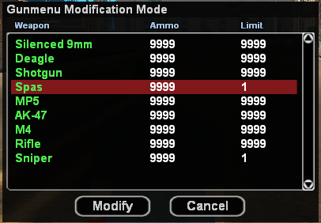 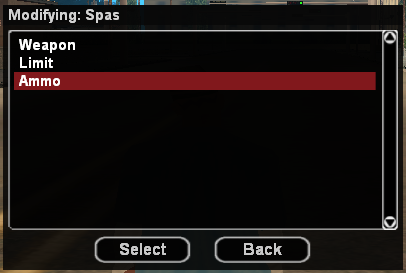 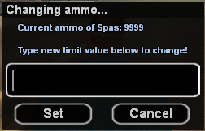You have full control over commands, you can set permission for different commands with zero knowledge of scripting, it's just an in-game command.
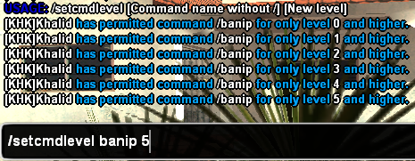Create your own duel system with just a simple in-game command.
You have control over important gamemode player-textdraws with the /hud command.
Bulleproof gamemode takes care of disturbing processes or game bugs for you while you're enjoying the game.
Automatic anti sprint macros.
Automatic anti sniper bug.
Automatic anti weapon distance bugs.
Automatic anti modified weapon.dat.
Automatic version checker.
Several hooks to reduce random client crashes.
Bulleproof beautifully mixes Whitetiger's Anticheat's new scripting features with the game
Toggle vehicle blips on radar for defender team.
Anti F8 key spam/abuse.
Efficient pause detection.
You may never get bored of bases because you can always switch bases set. Oldschool, modern and completely new bases.
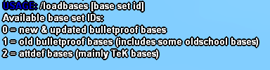You can easily code your key binds for different weapons in game with /weaponbinds.
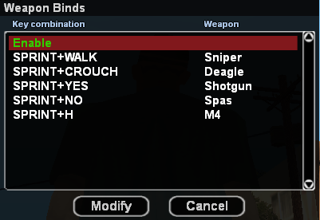 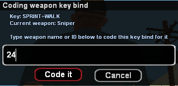You can lock/unlock certain teams. For example, you can lock Referee-team with a 'password' so nobody can spectate both teams at the same time. This should be useful during important CWs and tournaments.
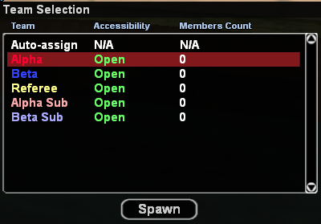 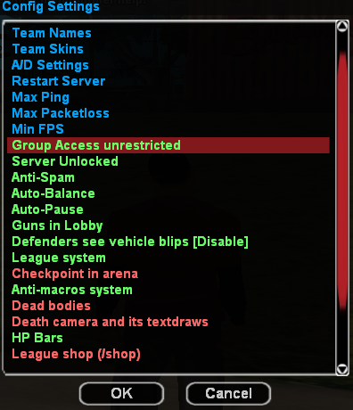 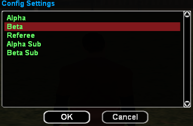 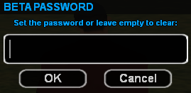